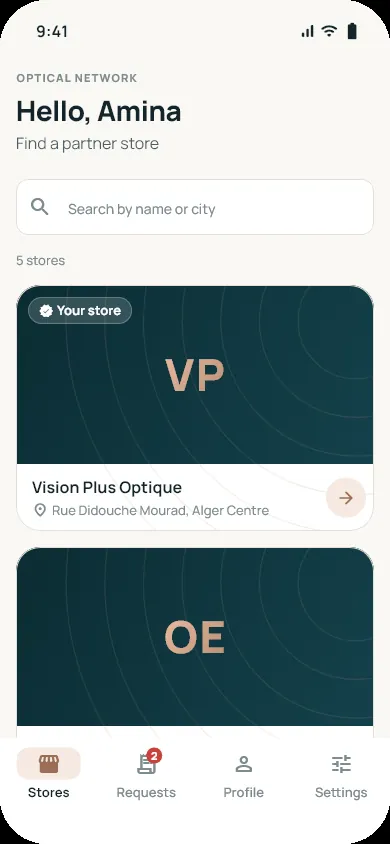
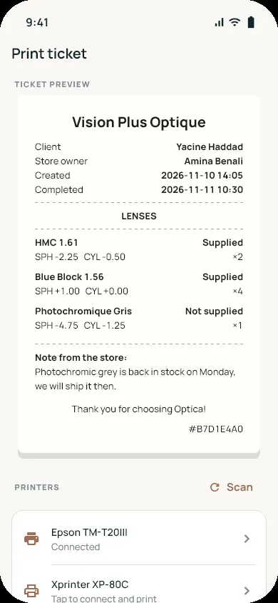
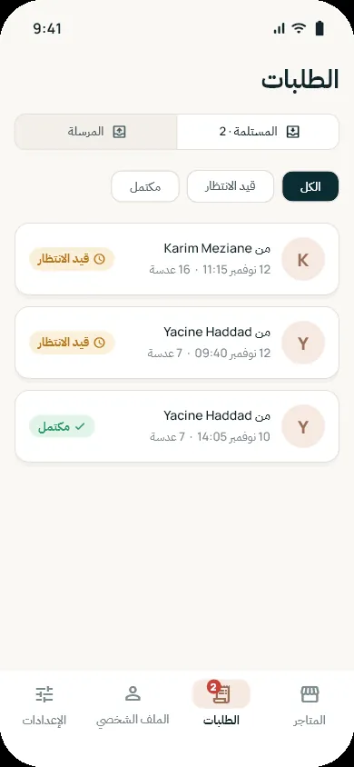

Directory
Find a partner store by name or city
Cover photos, a branded fallback when a store has none, and live alerts through Supabase Realtime when a request arrives or is completed.
Optical stores constantly order lenses from each other. Optica turns that into a network: browse partner stores, build an order by prescription, and the supplier ticks off what it can deliver and prints a ticket.

Directory
Cover photos, a branded fallback when a store has none, and live alerts through Supabase Realtime when a request arrives or is completed.

Order builder
Powers are stored as quarter-steps, so −2.25 is exactly −9 × 0.25. Identical lenses merge into one line, and the unsent order is kept per store on the device.

Thermal ticket
Tickets go out over USB or Bluetooth as ESC/POS. The on-screen preview is drawn from the same data, so what you see is what the printer gets.

Proof, not promises
Every Optica screen on this page comes from golden tests over fixture data, re-rendered in CI on each push. Strict analysis fails the build on any info-level issue; a test fails if a translation key is missing in any of the four languages.
Try it · scroll the wheels, add a lens twice
Order items
0 lenses · 0 lines
In floating point, 0.1 + 0.2 is . Optical prescriptions can’t afford that.